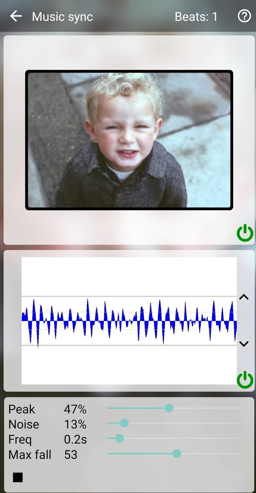

The videos produced by Zoetic are created from a series of images chosen by the user which are used to create a series of intermediate images automatically generated from those user chosen images. The intermediate images are created by combining consecutive pairs of user images so as to produce a smooth (or as specified by the user) transition from one image to the next. The number of intermediates images between consecutive pairs can be specified in three different ways. (The larger the number, the smoother and/or slower the transitions.)
As well as the above intermediate setting, the user specifies a value for the video's playback speed in frames per second (FPS). For the first two intermediate approaches, the FPS will change the speed of the video. For example, a pair of images with 30 intermediate images between them will take 3 seconds to transition if the FPS is set at 10, whereas it will take just 1 second if the FPS is set at 30. With the music synchronising approach, the FPS will not change the speed of the video (since it obviously has to stay synchronised with the audio track) but rather will alter the smoothness of the playback.
Intermediate images are created by combining a weighted first image with a weighted second image. (The sum of the 2 weights sum to 1.) If the weighting for the first image has a value of 0.3, and the weighting for the second a value of 0.7, the transitioned image would be created from combining 30% of the first image and 70% of the second. At the start of the transition, the first image has a weight of 1 and the second image a weight of 0. At the end of the transition the first image has a weight of 0 and the second image a weight of. The weights are calculated using a filter which can be one of the following:
A video comparing these four filters can be seen here (Google).
From Zoetic's main menu choose Music sync. Tap the music icon at the bottom right of the screen and choose the required audio file. Tap the play button and then adjust the four sliders as described below. The beats are detected by detecting local amplitude peaks (maxima). You are aiming for only the desired beats being detected. If your device struggles with updating the graph and/or the images, one or both of those visualisations can be turned-off by tapping the corresponding 'power' button.
The up and down buttons to the right of the graph just scale the graph for visual inspection. They do not change the beats that are detected.
Once the beats are being detected as required, stop the play back and then press play again and this time play through the entire audio track. This will record the beats that will be used by Zoetic to generate the video. Return to the main menu and tap Make video. A video showing these steps can be seen here.
Note that during playback, your device's microphone is active (that's how Zoetic listens to the audio track). This means that during playback, you should be sufficiently quiet so the microphone does not pick up any unwanted noise. Alternatively, if you are finding it difficult to set the controls to detect the correct beats, you could increase the noise setting so that Zoetic doesn't detect any beats and then you tap the microphone at the desired beat points.
| Back | Sub-projects |
|---|